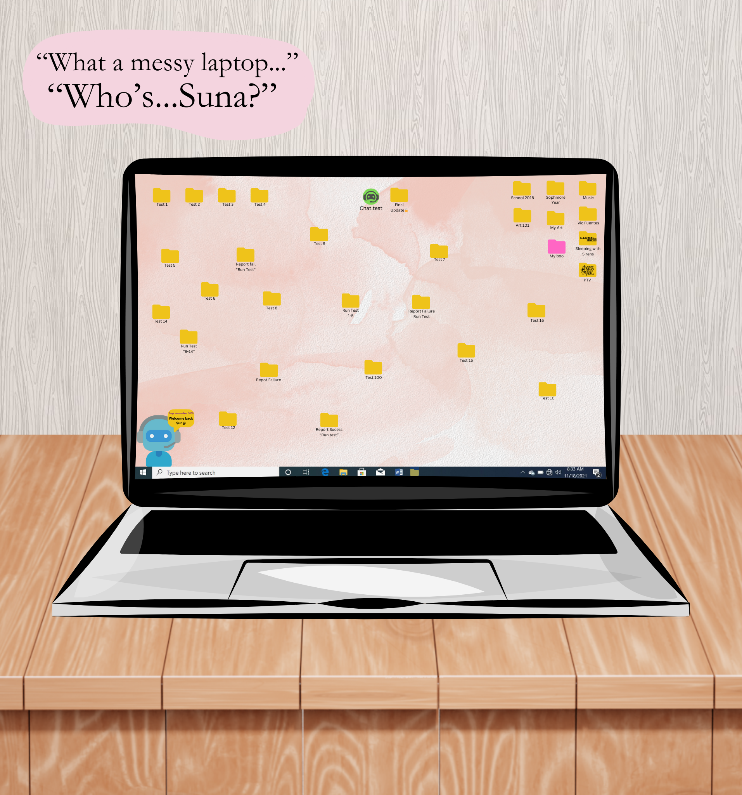

- BackStory -

(A small hint of their BackStory)
One day Kiwi is cleaning around her apartment, when she does she finds an old laptop. There was no damage but it was also dead, she was lucky her own laptop provided the same wire to the old one she found. Once she charged it to full, it goes straight to the home screen, no password. It was weird to her at first but she didn't question it. The first thing she really noticed was how messy and unorganized it was.
There was one thing she noticed, it was a folder labeled 'Final Update'. It was locked and required a passcode when Kiwi tried to acess the file. As she continued to look through the laptop she noticed a little bot in the bottom left of the screen, it seemed to be a small greeting bot, it would state "Welcome back Suna". It confused Kiwi as she just wondered who this Suna was and if they had left their laptop in her home on accident but, as she continued to look at the tiny greeting bot a little text forms above the greeting 'Days since online: 3000'.
It peaked her interst when she notices the laptop could've probably been abaondoned. Before she closed the laptop, a programmed opened onto the screen, it was named 'Proxy.txt', it was a chat box, it looked like an old instant chat or an yohaa chatbox, the AI was named 'Proxy', the natural greeting intruiged Kiwi as she asked it a simple question "Who is Suna?". The question threw off the AI as the software crashes and the message simple went 'Test run fail'.
Kiwi closes the laptop and furrowed her eyebrows, it was weird the chatbox was working perfectly fine when asking it questions such as What is 5 x 12? or "Where is Earth?" or even "How are you?". It was when she brought up Suna, was when the AI malfunctioned, she questioned that maybe it was something to do with the code, when she checked the setting she noticed the computer was running on Curtains 5, it shocked her slightly on how good condition the laptop was despite how old it was. She thought that maybe she could fix up the code and apply it to the nearest Curtains update, which was Curtains 11. She found a cord to connect the laptop to her computer and slowly spent her day working on transfering the 'Proxy.txt' file to her own laptop and tinkering with the code to make it up to date.